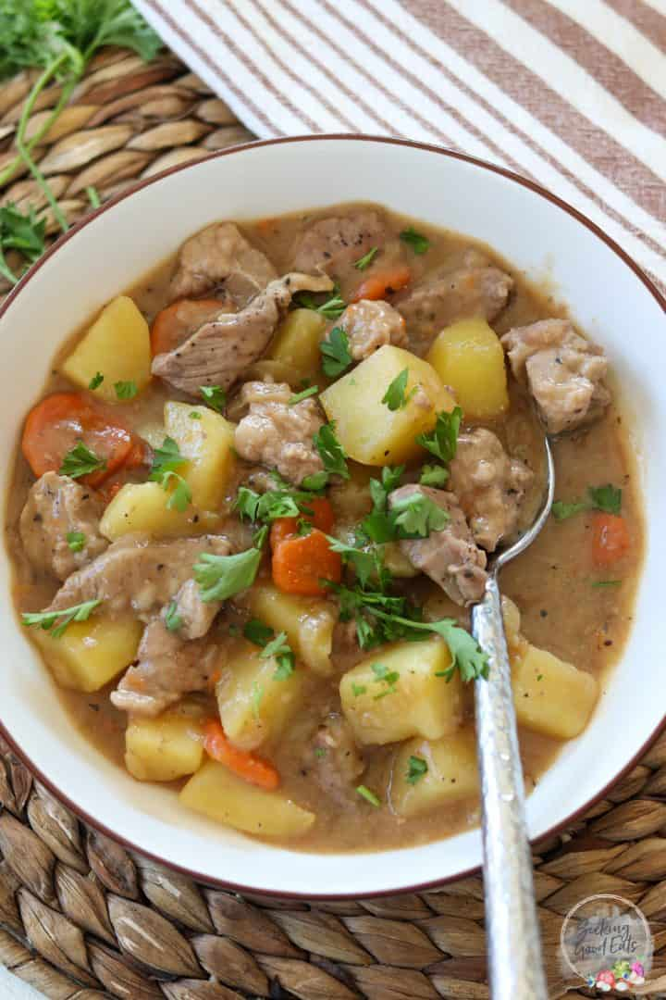

French Lamb Casserole
Home

Description
A timeless French bistro classic. Tender, slow-braised lamb shoulder melts into a rich, herb-infused tomato and white wine broth, loaded with sweet root vegetables. Pure comfort food with an elegant European twist.
Ingredients
- 1 kg lamb forequarter chops trimmed
- 35g packet French onion soup
- 410g can crushed tomatoes
- 8 baby carrots trimmed
Step-By-Step Recipe
- Place all the ingredients in the slow cooker.
- Season with cracked pepper and stir to combine.
- Cook on LOW for 6 to 8 hours or HIGH for 3 to 4 hours until the meat is fork tender and melting off the bone.
- Serve this delicious casserole with a classic mashed potato (page 22 of The Easiest Slow Cooker Book Ever) and green beans.